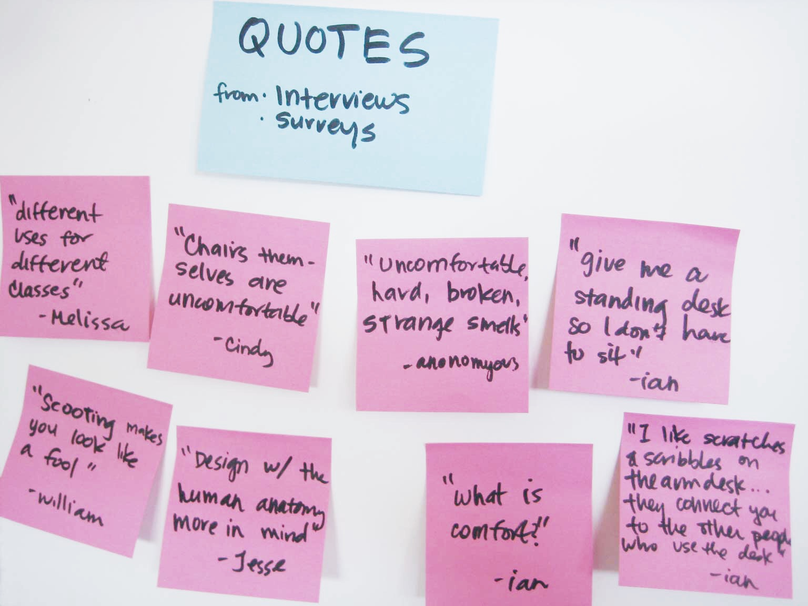
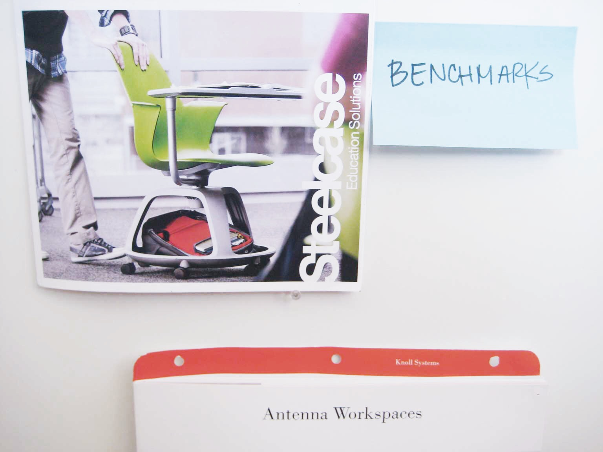
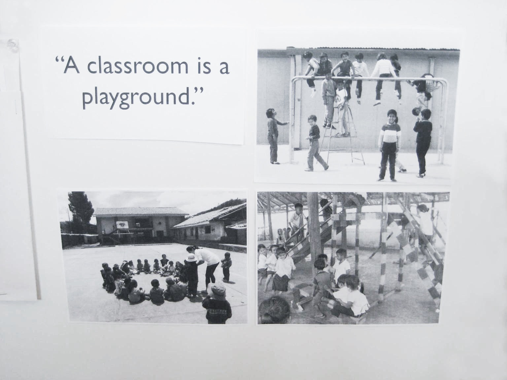
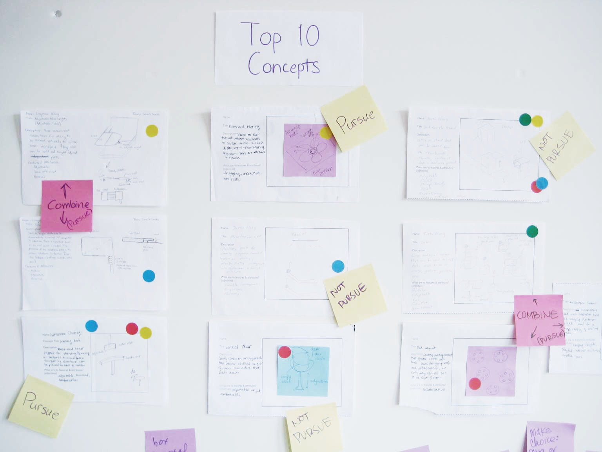
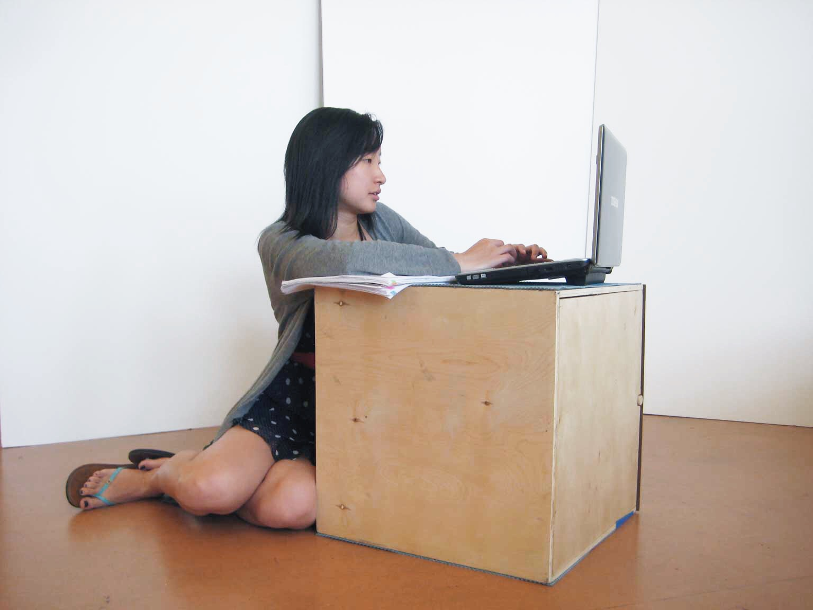
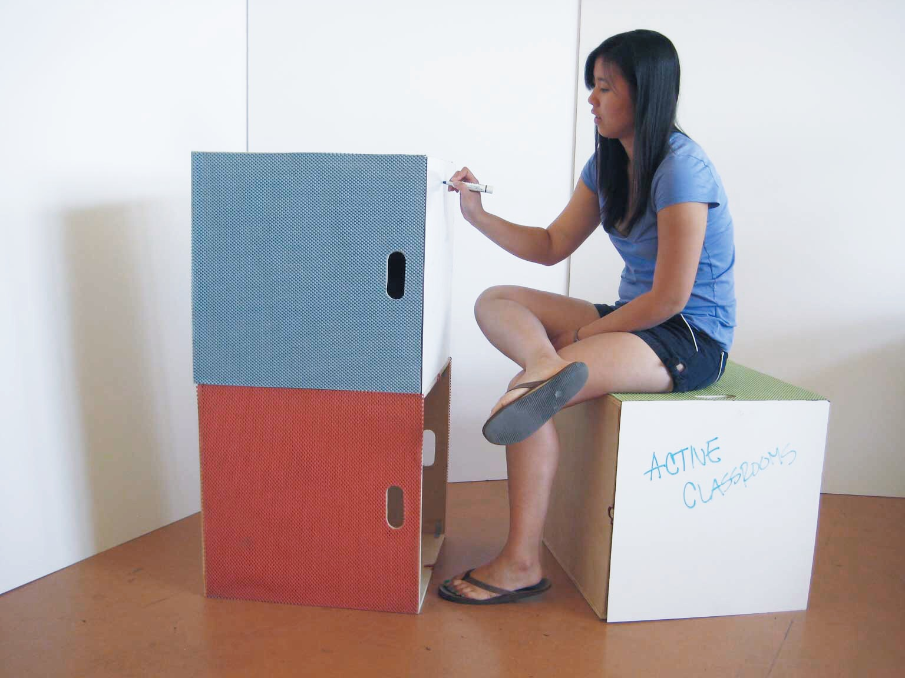
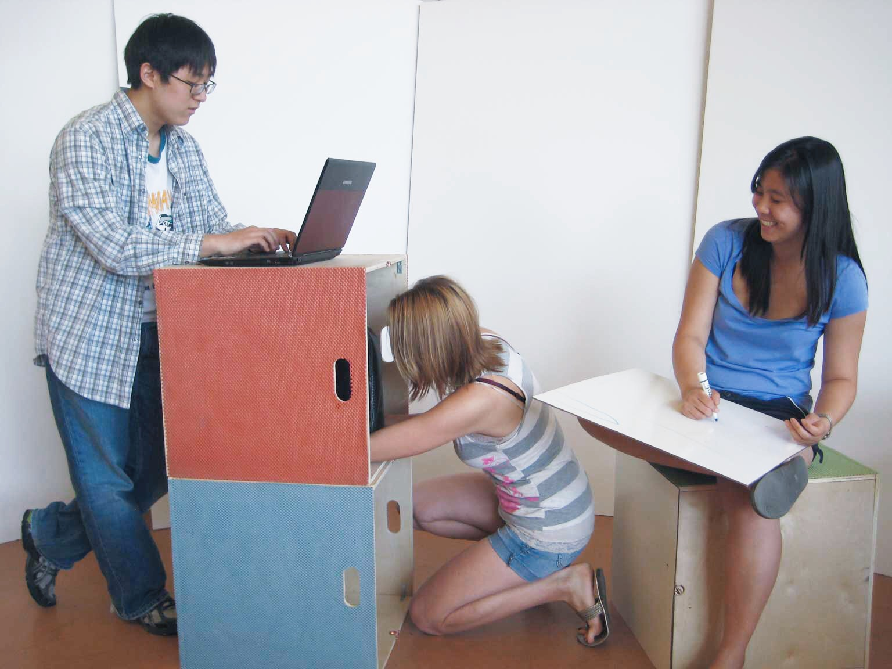

Active Classrooms
Learning in school used to be fun.
Don’t remember? Think back. Way back. Maybe as far back as Kindergarten. The classroom was a place where you would learn things by creating, being active, and interacting with others. It was an environment where individuality and divergent thinking were nurtured.
Then somewhere down the line, things changed. You’re told to sit still, be quiet, and pay attention to the teacher standing at the front of the classroom. They confine everyone to personal chair-desks. School becomes boring, and curiosity dwindles.
Active Classrooms was a project for Introduction to Product Development at UC Berkeley in the spring of 2011, with Soo Hark Chung, Anastasia Chvets, Katherine Duong, and Ling Wang. It pushes to make learning fun again through classroom furniture that encourages movement and interaction.
Needs assessment
We collected user needs using various methods: one-on-one interviews, surveys, storyboards, personas, observation.

In translating user statements into needs, we discovered a number of latent needs (needs expressed indirectly). For example, a lot of people mentioned that classroom chairs weren’t comfortable for sitting (or sleeping).
For us, these statements highlighted one important fact: learning in schools had become an extremely passive activity. Students were having to sit and listen to lectures for hours at a time.
Rather than focus directly on what people said they wanted (more comfortable chairs), we wondered if we could address the underlying issue and concentrate instead on building a product that encourages regular movement. Then, students wouldn’t be sitting for long periods of time.
We identified the most important product needs:
- Stimulate learning. People learn better when active and free to move around.
- Facilitate collaboration and communication. The added value of the classroom environment is interacting with other students.
- Adapt to different user preferences.
Concept generation
The team went through multiple rounds of concept generation. Through benchmarking, we were able to identify areas we could differentiate our product. And through the use of metaphors, we could make sure our concepts had clear intent.



Final concept
Based on feedback and guided by our product needs, we ultimately pursued a concept of modular furniture—multi-functional pieces that can be stacked and arranged to build a variety of learning environments. Aided by low-fidelity prototypes, we refined the concept even further to add handles and a detachable whiteboard that doubles as a cover.



The final prototype was constructed from plywood, whiteboard sheets, and cabinet liner. The simple form allows freedom of movement (enhancing learning), facilitates choice of seating postures (allows you to sit the way you want), and encourages creative use of classroom space.
Other benefits include mobility (they are light and have carrying handles), storage capacity, and personal whiteboards that allow you to quickly and visually share ideas.
Rethinking classroom furniture meant rethinking the way we learn too. Why should students be relegated to sitting and listening to a lecturer for the entire class period? We believed there was a better way to learn, where students are actively engaged, collaborating, and able to create their own ideas. Learning can be (and has always been) fun. Our product supports this notion.
We presented our idea and prototype to our classmates, instructors, and industry guests at the end of the semester, using the slogan:
Learn to play again.
Final thoughts
This course was one of the most worthwhile that I took during my time in school. A Mechanical Engineering course, nominally, but far different than others you’d find in the department.
The idea at the heart of Active Classrooms—that learning should be active, hands-on, and divergent—was mirrored in the course itself; it was inspiring and liberating.
As a team, we challenged ourselves to think outside the box throughout the entire process in order to come up with a solution that was truly different. While assessing needs, we looked beyond what was explicitly said (chairs are uncomfortable) to the actual meaning behind it (students are forced to sit for long periods of time). And while generating novel concepts, we used the unique metaphor of a playground to drive our thinking.